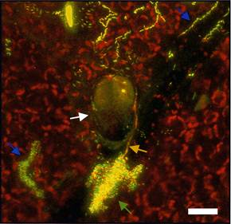
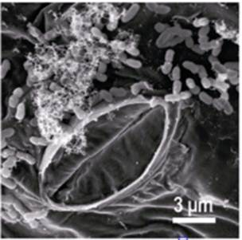

AMBE 101 :: Lecture 19 :: PHYLLOSPHERE BACTERIA

Aerial plant surfaces represent the largest biological interface on Earth and provide essential services as sites of carbon dioxide fixation, molecular oxygen release, and primary biomass production. Rather than existing as axenic organisms, plants are colonized by microorganisms that affect both their health and growth.
For terrestrial plants, the phyllosphere represents the interface between the above-ground parts of plants and the air. Conservative estimates indicate that the roughly 1 billion square kilometers of worldwide leaf surfaces host more than 1026 bacteria, which are the most abundant colonizers of this habitat . The overall microbiota in this ecosystem is thus sufficiently large to have an impact on the global carbon and nitrogen cycles. Additionally, the phyllosphere inhabitants influence their hosts at the level of the individual plants. To a large extent, interest in phyllosphere microbiology has been driven by investigations on plant pathogens. Their spread, colonization, survival, and pathogenicity mechanisms have been the subject of numerous studies. Much less understood are nonpathogenic microorganisms that inhabit the phyllosphere. The composition of the phyllosphere microbiota has been analyzed in only a few studies by cultivation-independent methods; however, such methods are essential in light of the yet uncultivated majority of bacteria existing in nature, or more specifically on plant leaves. Not only their identity, but in particular the physiological properties of phyllosphere bacteria, their adaptations to the habitat, and their potential role (e.g., with respect to modulating population sizes of pathogens) remain largely unknown. Current knowledge on the traits important in the phyllosphere is derived from relatively few studies on gene expression and stems mostly from model bacteria cultivated on host plants under controlled conditions. However, under natural conditions, plants and their residing microorganisms are exposed to a host of diverse, highly variable environmental factors, including UV light, temperature, and water availability; moreover, individual microbes are subjected to competition with other microorganisms over resources, such as nutrients and space.
Toward a deeper understanding of phyllosphere microbiology, and in particular to learn more about the commensal majority of plant leaf colonizing bacteria, which may be of relevance for plant health and development, integrated approaches are needed. Here,
Bacterial communities in the phyllosphere are thought to be limited by carbon availability, and it may be expected that access to carbon compounds on leaves is a major determinant of epiphytic colonization. There is evidence that small amounts of nutrients, such as simple sugars including glucose, fructose, and sucrose, leach from the interior of the plant.
The above-ground parts of plants are normally colonized by a variety of bacteria, yeasts, and fungi. While a few microbial species can be isolated from within plant tissues, many more are recovered from the surfaces of healthy plants. The aerial habitat colonized by these microbes is termed the phyllosphere, and the inhabitants are called epiphytes. While there has been some investigation of the colonists of buds and flowers, most work on phyllosphere microbiology has focused on leaves, a more dominant aerial plant structure. Bacteria are by far the most numerous colonists of leaves, often being found in numbers averaging 106 to 107 cells/cm2 (up to 108 cells/g) of leaf. Because of their numerical dominance on leaves, and because more information is available on the process of bacterial colonization of leaves, we focus on this group of microbes in this review.
Compared to most other bacterial habitats, there has been relatively little examination of phyllosphere microbiology. This is somewhat surprising given the abundance of plants in the world and the roles of various phyllosphere bacteria in the important processes discussed below. Leaves constitute a very large microbial habitat. It is estimated that the terrestrial leaf surface area that might be colonized by microbes is about 6.4 x 108 km2. Given the large number of bacteria on leaves in temperate regions of the world and that populations in tropical regions are probably even larger, the planetary phyllosphere bacterial population may be as large as 1026 cells. Clearly, in aggregate, these bacteria are sufficiently numerous to contribute in many processes of importance to global processes, as well as to the behavior of the individual plants on which they live.
The microbial communities of leaves are diverse and include many different genera of bacteria, filamentous fungi, yeasts, algae, and, less frequently, protozoa and nematodes. Filamentous fungi are considered transient inhabitants of leaf surfaces, being present predominantly as spores, whereas rapidly sporulating species and yeasts colonize this habitat more actively. Bacteria are by far the most abundant inhabitants of the phyllosphere. Epiphytic bacterial populations differ sharply in size among and within plants of the same species, as well as in close proximity, and over short time scales as well as over the growing season. These considerable variations in population sizes are caused in great part by the large fluctuations in the physical and nutritional conditions characteristic of the phyllosphere. Additionally, plant species appear to influence the microbial carrying capacity of the leaf, since the total number of culturable bacteria recovered from broad-leaf plants such as cucumber and beans was significantly greater than that recovered from grasses or waxy broad-leaf plants.
Reflective of marked differences in the physicochemical environments of above-ground versus subterranean plant surfaces, the leaf bacterial flora differs substantially from that of roots. For example, pigmented bacteria, which are rarely found in the rhizosphere, dominate leaf surfaces, presumably because solar radiation influences the ecology of the phyllosphere. The differential composition of leaf and root bacterial communities is further evidenced by the failure of common root colonizers such as Rhizobium and Azospirillum to become established on leaves.
Studies of the composition of bacterial communities on leaves have been numerous but rather limited in scope. It is generally believed that populations of culturable aerobic bacteria on leaves are dominated by a few genera. A few exhaustive studies of the variations in the microbial community of leaves over multiple time and space scales have provided important detailed knowledge about the identity and the ecology of bacterial leaf inhabitants. Ercolani made an extensive inventory of culturable aerobic bacteria isolated from the surface of olive leaves over six growing seasons and reported distinct bacterial community structures on leaves of the same age at a given time of the growing season. Thompson et al. analyzed 1,236 bacterial strains from immature, mature, and senescent leaves of field-grown sugar beets over a complete growing season. They identified 78 species and 37 named and 12 unnamed genera of bacteria. Most importantly, like Ercolani, they found distinct patterns of microbial colonization at different times of the year, with bacterial community diversity being lowest during the warmest and driest months of the season and highest during the cooler and rainy months. Coincidentally, in both of the above-described studies, communities on young leaves were composed of a greater number of taxa than those of old leaves. Thus, specific natural environments of the phyllosphere apparently select for the presence of specific genotypes within the leaf bacterial community. This is further supported by the finding that the acquisition by Pseudomonas fluorescens of plasmids that are indigenous to the leaf microflora coincided with a specific maturation stage of the plant over two consecutive years. This indicated that traits carried on these plasmids conferred variable selective fitness to specific plasmid-bacterial host combinations during the growing season, possibly in response to changing conditions in the phyllosphere habitat.
The study of bacterial colonizers of leaves has been restricted mostly to aerobic culturable bacteria and also driven by the importance of investigating the ecology of plant-pathogenic bacteria because of their deleterious effect on plant productivity. Thus, the microbial ecology of the phyllosphere has been viewed mainly through the biology of gram-negative bacteria such as Pseudomonas syringae and Erwinia (Pantoea) spp., two of the most ubiquitous bacterial participants of phyllosphere communities. There is reason to believe, however, that the extreme fluctuations in the physicochemical environment of the phyllosphere over short time scales may select for bacterial species that have unusual and versatile traits that make them fit to colonize plant surfaces but have remained unculturable. The leaf surface has long been considered a hostile environment for bacterial colonists. The leaf surface is exposed to rapidly fluctuating temperature and relative humidity, as well as repeated alternation between presence and absence of free moisture due to rain and dew. The leaf also provides limited nutrient resources to bacterial colonists. While other habitats probably offer more extreme conditions of desiccation or temperature, etc., they may not be subject to such rapid and extreme fluctuations in these several physical conditions. Several factors may influence the microhabitat experienced by bacteria on leaves. First, the leaf itself is surrounded by a very thin laminar layer in which moisture emitted through stomata may be sequestered, thereby alleviating the water stress to which epiphytes are exposed. Second, some cells in a leaf bacterial population, particularly in plant-pathogenic populations, may not reside in exposed sites on the leaf surface but instead may at least locally invade the interior of the leaf, avoiding the stresses on the exterior of the leaf by residing in substomatal chambers or other interior locations. Thus, while some phytopathogens may have the option of avoiding stresses, most other epiphytes apparently must tolerate them in some way.

The phyllosphere has many features that make it an excellent habitat in which to study microbial ecology. Leaves are clean, and microbes can be observed directly on leaves, enabling the use of powerful new microscopic techniques to measure microbial identity, activity, and gene expression. Plants can be readily grown without epiphytic microbial communities, allowing us to readily manipulate their inhabitants, while communities can be made as simple or complex as needed by simple inoculation. In addition, important microbial processes, such as immigration, and ecological models, such as island biogeography, can be readily explored in epiphytic bacterial systems. Thus, phyllosphere microbiology has much to offer to the field of microbial ecology and promises to contribute to more effective and less environmentally damaging means of plant protection.

| Download this lecture as PDF here |